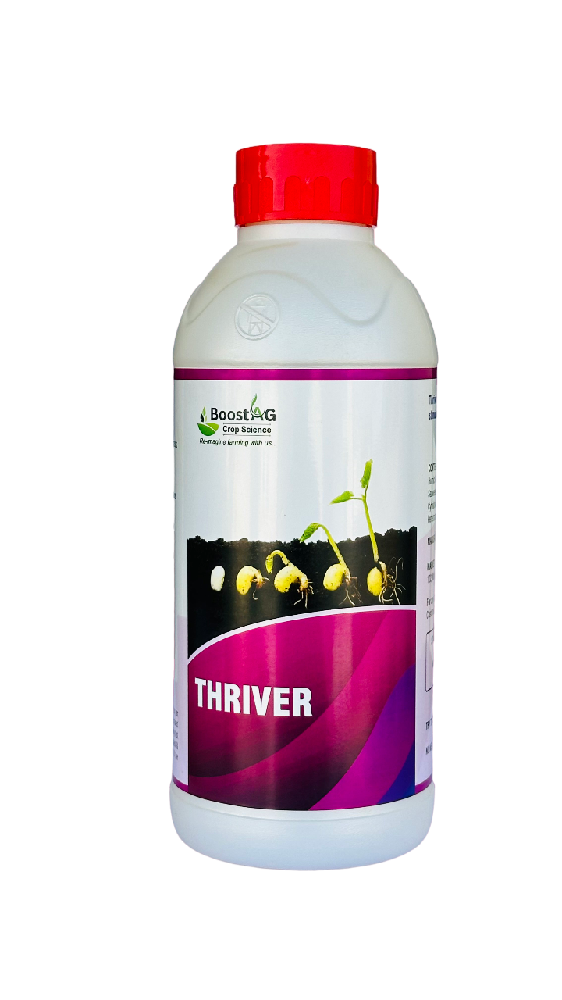

Greensil care
Greensil care is a combination of Concentrated Natural Bio-Stimulants. It is specially formulated to enhance Physical Quality, Grade, Taste & Yield of the crops.
What does Greensil care contain?
Silica Compound: 30% w/w, Auxins:2% w/w
Cytokinins: 1% w/w, Natural Plant Extracts: 25% w/w
Vitamins: 10% w/w Penetrators,
Emulsifiers & Surfactants:32%(w/w), Q.S.= Total: 100% (w/w).
BENEFITS
Develops resistance against diseases, pests, adverse climate conditions like drought or heavy rain.
Tougher & sustainable crops.
Increases the leaf, canopy area, Photosynthesis rate, uptake and metabolism of Phosphate, Nitrogen and other nutrients.
Extends the shelf life of the produce for long distances transportation.
Increases the yield tremendously.
RECOMMENDED DOSE
Spraying : 2-3 ml per Liter of water.
Fertigation : 1lit per acre.
RECOMMENDED CROPS
Beneficial for all Crops.

AG Kelp+
AG Kelp/AG Kelp+ contains 60 types of Organic Bioactive ingredients in chelated form which are available to crop instantly.
What does AG Kelp+ contain?
Seaweed Extract: 25% w/w, Multivitamins: 14%(w/w)
Enzymes:13%(w/w), Proteins:28%(w/w)
Surfactants and Adjuvants:20%(w/w)
Auqa:Q.S.= Total:100%
BENEFITS
Improves Plant Health by Stimulating Growth. Increases the nutrient uptake, protein content and overall quality of the crop.
Increases resistance of plants to frost and disease, increases uptake of inorganic constituents from the soil, bolsters resistance to stress conditions and reduces storage losses of fruit. They contain almost every micro-nutrient in a fully chelated (immediately available) form.
The algae is also full of carbohydrates, which plants use as a building block. Numerous beneficial microorganisms also use carbohydrates as a food source.
Improves Soil Quality, Faster Seed Germination, Reduces Leaching, Improves crop Yield.
RECOMMENDED DOSE
Spraying : 2-3 ml per Liter of water.
Fertigation : 1lit per acre.
RECOMMENDED CROPS
Beneficial for all Crops.

Thriver
Thriver is highly concentrated natural bio-stimulant for root and stem growth.
What does THRIVER care contain?
Humic Acid: 25% w/w, Fulvic Acid: 12% w/w,
Seaweed Extract: 10% w/w, Amino Acid: 15% w/w,
Cytokinins: 2 % w/w, Vitamins: 15% w/w, Auxins: 1% w/w
Penetrators, Emulsifiers & Surfactants:20% w/w, Q.S..= Total: 100% (w/w).
BENEFITS
Boosts early root growth & elongation.
Increases the number of white roots.
Increases the branching & tillering.
Improves the germination rate tremendously. Enhances the plant vigour.
Improves the photosynthesis rate.
Increases the synthesis of Phytohormone.
Increases the yield and improves quality of the produce.
RECOMMENDED DOSE
Fertigation : 1lit per acre.
RECOMMENDED CROPS
Beneficial for all Crops.

V-Riser
V-Riser is a Premium Amino Acids Concentrate.
What does V-Riser care contain?
Amino Acids: 50%(w/w), Enzymes: 3%(w/w),
Natural Growth Promoters: 3%(w/w), Multivitamins: 2%(w/w),
Seaweed Extract: 13%(w/w), Proteins: 20%(w/w),
Surfactants and Adjuvants: 9%(w/w), .
Auqa:Q.S.= Total: 100% (w/w).
BENEFITS FOR VEGETABLES
Increases the cell division process.
Speeds up the photosynthesis process.
Enhances tillering and branching.
Increase the uptake of Primary and Secondary micro nutrients.
Improves plant health even in very adverse conditions.
Increases the yield and improves quality of the produce.
BENEFITS FOR FRUITS
Increases size and weight of the fruit. Enhances fruit color & shine.
Uniform size of fruits.
Speeds up the rate of photosynthesis and nutrient translocation.
Enhances the nutrient solubility and transport mechanism within the plant.
Increases the durability of fruits.
Increases the yield and improves the taste & quality of the fruits.
RECOMMENDED DOSE
Fertigation : 1lit per acre.
RECOMMENDED CROPS
Spraying : 2-3 ml per Liter of water.
Beneficial for all Crops.
Sizon
Sizon is a concentrated natural bio-stimulant for better size, color & quality.
What does Sizon care contain?
Amino Acid: 22% w/w, , Folic Acid: 25% w/w
Multivitamins: 2% w/w, Natural Growth Promoters: 18% w/w,
Surfactants, Penetrators, Emulsifiers and Adjuvants:33% w/w, Q.S. = 100%
BENEFITS
Increases size and weight of the fruit. Enhances fruit color & shine.
Uniform size of fruits.
Speeds up the rate of photosynthesis and nutrient translocation.
Enhances the nutrient solubility and transport mechanism within the plant.
Increases the durability of fruits.
Increases the yield and improves the taste & quality of the fruits.
RECOMMENDED DOSE
Fertigation : 1lit per acre.
RECOMMENDED CROPS
Beneficial for all Crops.
Sizon+ (Foliar)
Sizon+ (Foliar) is a natural bio-stimulant for better shape, color and quality.
What does Sizon+ (Foliar) care contain?
Amino Acid: 22% w/w, , Folic Acid: 25% w/w
Multivitamins: 2% w/w, Natural Growth Promoters: 17.9% w/w
Biopotash: 0.1%w/w, Surfactants, Penetrators, Emulsifiers and Adjuvants:33%(w/w), Q.S. = 100%
BENEFITS
Increases size and weight of the fruit. Enhances fruit color & shine.
Uniform size of fruits.
Speeds up the rate of photosynthesis and nutrient translocation.
Enhances the nutrient solubility and transport mechanism within the plant.
Increases the durability of fruits.
Increases the yield and improves the taste & quality of the fruits.
RECOMMENDED DOSE
Spraying : 2.5-3 ml per Liter of water.
RECOMMENDED CROPS
Beneficial for all Crops.

Mango Care
Mango Care
What does Mango Care care contain?
Seaweed Extract: 25% w/w, Multivitamins: 14%(w/w), Enzymes:12.9%(w/w),
Biopotash: 0.1%w/w, Proteins: 28%(w/w), Surfactants and
Adjuvants:20%(w/w), Auqa:Q.S.= Total:100%
BENEFITS
Improves Plant Health by Stimulating Growth. Increases the nutrient uptake, protein content and overall quality of the plants.
Increases resistance of plants to frost and disease, increases uptake of inorganic constituents from the soil, bolsters resistance to stress conditions and reduces storage losses of fruit. They contain almost every micro-nutrient in a fully chelated (immediately available) form.
Reduces immature dropping of flowers & fruits. Increases maturity & improves quality.
Improves post harvest storage life of fruits.
The algae is also full of carbohydrates, which plants use as a building block. Numerous beneficial microorganisms also use carbohydrates as a food source.
RECOMMENDED DOSE
Spraying : 2-3 ml per Liter of water.
Fertigation : 1lit per acre.
RECOMMENDED CROPS
Beneficial for all Crops.